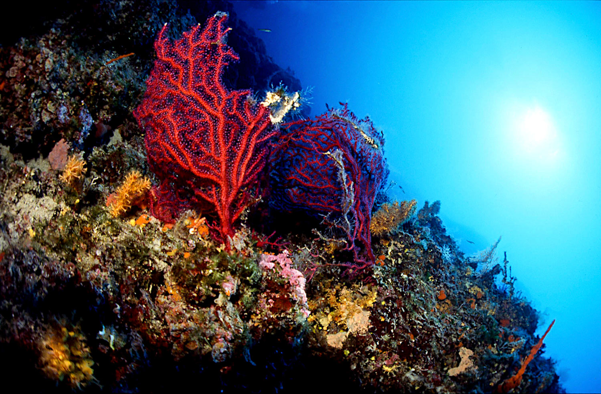

Wreck · AOWD
Wreck
Shipwreck Peltastis
60-metre Greek transport, upright on sand, 1968. The mast column is the photograph.
8–31 mDepth
15–25 mVisibility
BoatEntry
A design language for Diving Center Mihurić — rooted in the real colours of the Kvarner Adriatic, built on a bubble motif, and ready to hand off as CSS variables.
The brief asked for a palette grounded in the real water — not Caribbean teal, and not a generic resort. Mihurić's photos deliver an uncommonly specific set of colours. Everything below is anchored in them.
Three palette directions. Each pulls colours directly from the Mihurić photo library (silhouette, wreck, coral wall, boat-briefing, harbour). No swatches invented. You pick one.
The 1995 roundel is a memorable mark and its yellow is doing identity work. Gorgonian red is the new primary accent, but yellow is preserved as a small, warm micro-accent — quotes, indicators, heritage moments.
Homepage hero gets the bubble field. Elsewhere, bubbles are a one-moment-per-surface grace note: a loader, a section divider, a cursor-following lens. An "aha, neat," not "wow, bubbles everywhere."
The site is light-biased — editorial, Kvarner limestone. Dive-site detail pages and immersive hero sections flip to a near-black navy that's consistent with the photographer's working palette.
Manager, if I had to pick one: Palette A (Adriatic Deep). It reads closest to the photographer's eye — the dark-to-light shaft of a silhouette dive — and leaves surface-colour warmth to come from photography rather than paint. But B makes the family-holiday register warmer and C keeps the 1995 logo louder. Flip them in the Tweaks panel.
Tokens match the existing contract. The globals.css block at the bottom of this page uses the names already declared in the repo — --color-brand, --color-surface, --font-display, --radius-card, --spacing-section. Nothing renamed. Drop-in.
Each strip shows the six working tokens: brand, secondary, accent, accent-warm (logo yellow), ink, surface. Hover a chip for the oklch value. Tap Choose to preview the full site in that palette.
Each of the six tokens expands to a 10-step ramp. Used for hover states, borders, text hierarchy, backgrounds, and chart/data moments on the eventual Weather and dive-site pages. Values reflect the palette selected above.
The brief calls for serif-leaning, editorial-dense pages — not tech-startup geometric. I'm evaluating one warm-serif pairing and one humanist-sans pairing. Both are variable fonts; both are Google-hosted; both render real headlines below.
The wreck is a sixty-metre Greek transport that went down in 1968 on a still October night. Today she lies upright on sand, her masts festooned with the Adriatic's knotted rope — yellow sponges, red gorgonians, a permanent colony of bogue.
AOWD certification, a dive light, and a buddy who can handle slight current at the stern. The mast column is the best photo line; save air for it.
Min. depth 8 m / 26 feet. Max. depth 31 m / 100 feet. Visibility typically 15–25 m. Water 14–24°C seasonal.
The wreck is a sixty-metre Greek transport that went down in 1968 on a still October night. Today she lies upright on sand, her masts festooned with the Adriatic's knotted rope — yellow sponges, red gorgonians, a permanent colony of bogue.
AOWD certification, a dive light, and a buddy who can handle slight current at the stern. The mast column is the best photo line; save air for it.
Min. depth 8 m / 26 feet. Max. depth 31 m / 100 feet. Visibility typically 15–25 m. Water 14–24°C seasonal.
A single 4-unit base. Sections breathe at 80. Dive-site cards use 12px radius; buttons 8px; pills stay full-round for sparing, decisive use. Shadows stay flat or near-flat — photography is the texture.
The live site has no booking engine. The inputs system is scoped for a modest contact form: name, email, dates, message, course interest, plus the occasional select and checkbox on filter UIs.
The three component families the templates will lean on hardest. Primary CTA is "Get in touch" or "Plan your dive" — never "Book now." The accent red is reserved for the one action per page that matters.
60-metre Greek transport, upright on sand, 1968. The mast column is the photograph.
Five days, nine dives. Min. age 12. Max. depth 18 m / 60 ft. Includes equipment, materials, certification card.

Dive-site detail pages flip to a near-black navy. Photography carries the colour; UI recedes. Same token names, different values — wired through --color-deep-* variants and ready for page templates.
A shaft of sunlight drops through the tunnel's west mouth at mid-morning. Come in from the north, exit south. 14 m maximum.
House-reef bubbles on the way up. Shot at f/8, 1/125, Nikonos III. The little ones always race the big ones.
Wall dive, 8 – 36 m, posidonia shelf on top, gorgonian forest in the blue. Recommended for AOWD+.
Bubbles appear in three places across the system: the homepage hero (continuous ambient field), small decorative UI (loaders, dividers, cursor moments), and the dot in the ć. Not on every surface. Not a background fill. An "aha, neat" — not a "wow, bubbles."
Canvas ambient field — ~18 bubbles, one pre-rendered sprite, sine-wobble on rise. Stays under 1% CPU, pauses when the hero scrolls off, honours prefers-reduced-motion. The negative space around the headline does the heavy lifting.
Replaces the generic spinner when the inquiry form is posting. Four bubbles, staggered, silent.
Replaces <hr>. Three bubbles float up between two lines. Static, non-animated — respects reading flow.
On dive-site photo thumbs. Lens scale 1.4×, 140px circle, follows cursor. Used sparingly — dive-site detail only.
globals.css.Every token name here already exists in the repo. Paste the block below into src/styles/globals.css, replacing the placeholder @theme block. The values shown are for Palette A — Adriatic Deep. The other two are also exported at the bottom for easy swapping.